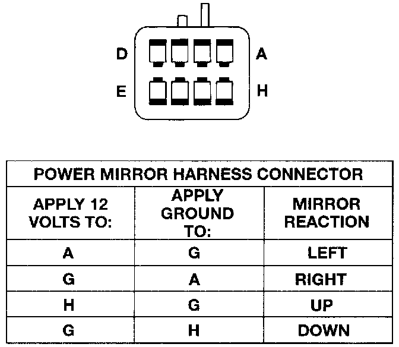

Power Mirror
If both power mirrors are inoperative, see the tests under Power Mirror System. If only one power mirror is inoperative, or partially inoperative, refer to the symptom diagnosis as follows.Limited Or No Mirror Movement
1. Disconnect and isolate the battery negative cable. Remove the front door trim panel on the side of the inoperative mirror as described under Door Module.
Mirror Test:

2. Unplug the mirror wire harness connector from the door module. Using two jumper wires, test the mirror as shown in the Mirror Test chart. If the mirror tests OK, use a DRB scan tool and the proper Computers and Control Systems/Body Control Module/Testing and Inspection Procedures to test the door module and the CCD data bus. If the mirror does not test OK, replace the faulty mirror.
No Mirror Heat
If both mirror heaters are inoperative, test the Rear Defogger System.
1. Disconnect and isolate the battery negative cable. Remove the front door trim panel on the side of the inoperative mirror as described under Door Module.
2. Unplug the mirror wire harness connector from the door module. Check for continuity between the heater switched ground circuit cavity and the heater 12 V supply circuit cavity of the mirror wire harness connector. There should be continuity If OK, use a DRB scan tool and the proper Computers and Control Systems/Body Control Module/Testing and Inspection Procedures to test the door module and the CCD data bus. If not OK, replace the faulty mirror.
No Mirror Dimming (Driver Side Only)
1. Test the operation of the Automatic Day/Night Mirror as described. If OK, go to Step 2. If not OK, repair the automatic day/night mirror unit as necessary before you proceed.
2. Disconnect and isolate the battery negative cable. Remove the driver side front door trim panel as described under Door Module.
3. Unplug the 2-way electrochromic mirror wire harness connector from the driver side outside mirror and connect a voltmeter to the door wire harness half of the connector. Perform the automatic day/night mirror test as described, while observing the voltmeter. A voltmeter reading of 1.45 ± 0.05 Volts. indicates a proper dimming signal is being received at the mirror wire harness connector. If OK, replace the faulty power mirror. If not OK, repair the circuits to the automatic day/night mirror as required.
No Mirror Memory
For diagnosis of the memory system, the use of a DRB scan tool and the proper Computers and Control Systems/Body Control Module/Testing and Inspection Procedures are recommended.